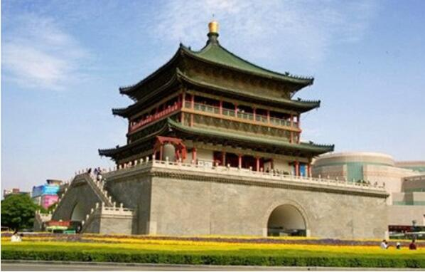

morly旅游圈
西安，古称长安、镐京，现为陕西省省会、副省级市、是国务院批复确定的中国西部地区重要的中心城市，国家重要的科研、教育和工业基地 。 西安是中国四大古都之一，联合国科教文组织1981年确定的“世界历史名城”，美媒评选的世界十大古都之一。 西安地处关中平原中部，北濒渭河，南依秦岭，八水润长安。全市下辖11区2县， 总面积10108平方公里。2015年末常住人口870.56万，其中城镇人口635.68万，城镇化率72.61%。 长安自古帝王都，西安拥有着5000多年文明史、3100多年建城史、1100多年的建都史，是中国四大古都之一，中华文明和中华民族重要发祥地之一，丝绸之路的起点。 丰镐都城、秦咸阳宫、兵马俑，汉未央宫、长乐宫，隋大兴城，唐大明宫、兴庆宫等勾勒出“长安情结”。
西安是中国最佳旅游目的地、全国文明城市之一，国家重要的科教中心，拥有西安交通大学、西北工业大学、西安电子科技大学等7所985或211工程类大学。 西安目前已有两项六处遗产被列入《世界遗产名录》，分别是：秦始皇陵及兵马俑、大雁塔、小雁塔、唐长安城大明宫遗址、汉长安城未央宫遗址、兴教寺塔。 2018年2月，国家发展和改革委员会、住房和城乡建设部发布《关中平原城市群发展规划》支持西安建设国家中心城市、国际性综合交通枢纽、建成具有历史文化特色的国际化大都市 。
今年冬季去哪里游玩？其实不需要去太远，便可以去游玩到一些好玩，小编在此为你推荐几个西安游玩的好去处，和朋友家人一起去游玩吧！
秦始皇兵马俑
兵马俑（Terracotta Army；Terra-cotta Figures；soldier and horse figures），即秦始皇兵马俑，亦简称秦兵马俑或秦俑，位于今陕西省西安市临潼区秦始皇陵以东1.5公里处的兵马俑坑内。天安门广场，44万平方米，可容纳100万人举行盛大集会，是世界上最大的城市广场。
【地点】西安市临潼区骊山北麓
【门票】160
大雁塔
大雁塔位于唐长安城晋昌坊(今陕西省西安市南)的大慈恩寺内，又名"慈恩寺塔"。唐永徽三年(652年)，玄奘为保存由天竺经丝绸之路带回长安的经卷佛像主持修建了大雁塔，
最初五层，后加盖至九层，再后层数和高度又有数次变更，最后固定为今天所看到的七层塔身，通高64.517米，底层边长25.5米。
【地址】陕西省西安市雁塔区大慈恩寺内
【门票】50
西安城墙
西安城墙又称西安明城墙，是中国现存规模最大、保存最完整的古代城垣 ，是第一批全国重点文物保护单位、国家AAAA级旅游景区。广义的西安城墙包括西安唐城墙和西安明城墙，但一般特指狭义上的西安明城墙。
【地址】陕西省西安市中心区
【门票】54
钟鼓楼
西安钟楼始建于明洪武十七年(公元1384年)，原建于今西大街北广济街东侧，明万历十年(公元1582年)移于现址。钟楼是一座重檐三滴水式四角攒尖顶的阁楼式建筑，面积1377.64平方米，建在用青砖、白灰砌成的方形基座上。基座下有高与宽均为6米的十字形券洞与东南西北四条大街相通。
【地址】陕西省西安市中心
【门票】35
华清池
华清池，亦名华清宫，位于陕西省西安市临潼区骊山北麓，西距西安30公里，南依骊山，北临渭水，是以温泉汤池著称的中国古代离宫。周、秦、汉、隋、唐历代统治者，
都视这块风水宝地为他们游宴享乐的行宫别苑，或砌石起宇，兴建骊山汤，或周筑罗城，大兴温泉宫。白居易、杜牧等诗人在诗作中均有提及。
【地址】陕西省西安市临潼区骊山北麓
【门票】免费
内容整理至网络，如有侵权，请联系我们！1255394075@qq.com
